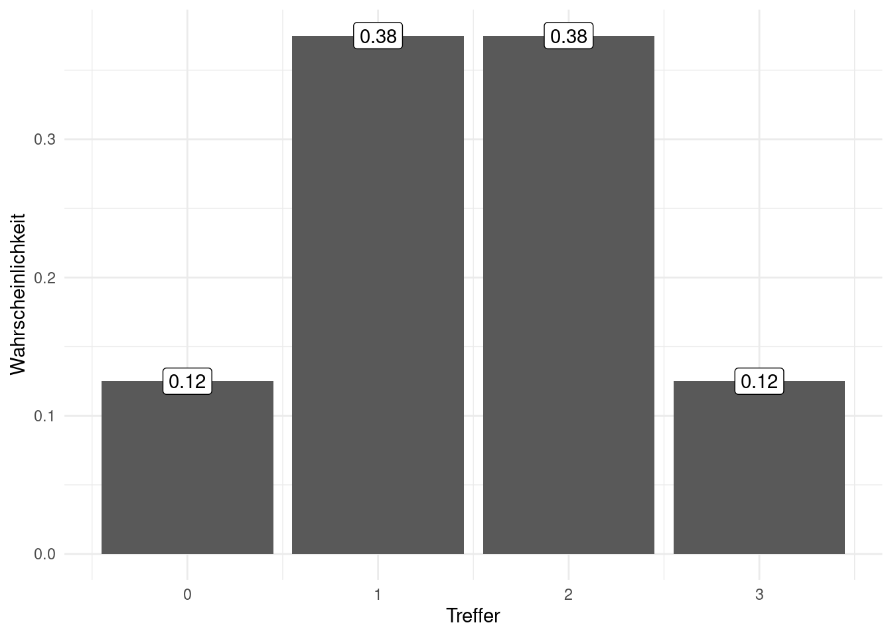
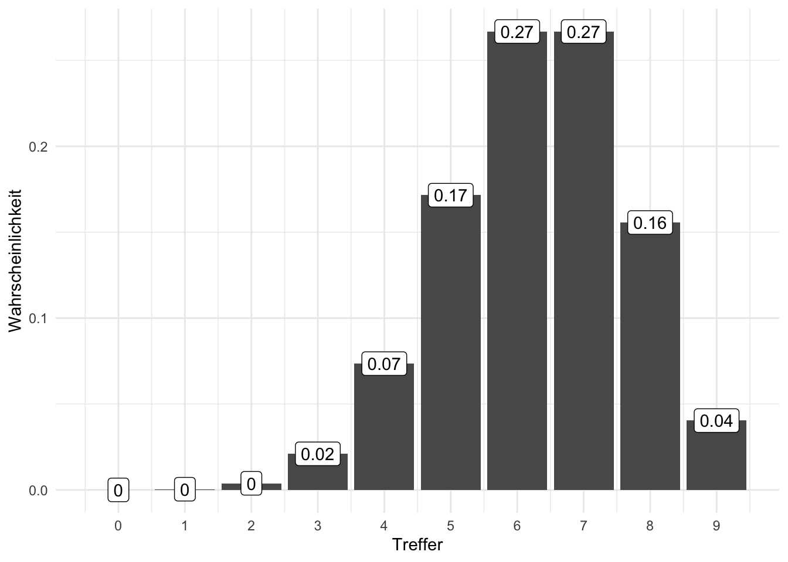
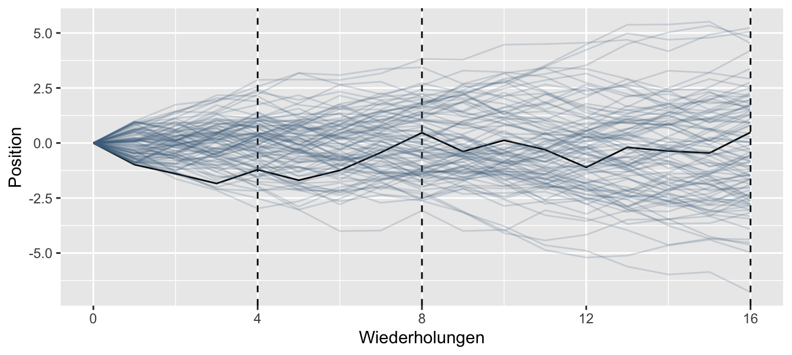

4 Verteilungen
4.1 Lernsteuerung
4.1.1 Position im Modulverlauf
Abbildung 1.1 gibt einen Überblick zum aktuellen Standort im Modulverlauf.
4.1.2 Lernziele
Nach Absolvieren des jeweiligen Kapitels sollen folgende Lernziele erreicht sein.
Sie können …
- den Begriff der Zufallsvariablen erläutern
- die Begriffe von Wahrscheinlichkeitsdichte und Verteilungsfunktion erläutern
- den Begriff einer Gleichverteilung erläutern
- die Parameter einer Normalverteilung nennen und erläutern
- zentrale Konzepte in R umsetzen
4.1.3 Begleitliteratur
Der Stoff dieses Kapitels deckt sich (weitgehend) mit Bourier (2018), Kap. 6.1 und 6.3 sowie 7.1 und und 7.2.
4.1.4 Vorbereitung im Eigenstudium
Lesen Sie selbständig, zusätzlich zum Stoff dieses Kapitels noch Bourier (2018); dort folgende Abschnitte:
- Kap. 6.1 (Zum Begriff Zufallsvariable)
- Kap. 6.3 (Stetige Zufallsvariablen)
- Kap. 7.1.1 (Binomialverteilung)
- Kap. 7.2.1 (Gleichverteilung)
- Kap. 7.2.3 (Normalverteilung)
Lösen Sie auch die Übungsaufgaben dazu.
Weitere Übungsaufgaben finden Sie im dazugehörigen Übungsbuch, Bourier (2022).
4.1.5 Prüfungsrelevanter Stoff
Beachten Sie, dass neben den Inhalten des Kapitels auch stets der vorzubereitende Stoff prüfungsrelevant ist.
4.1.6 Benötigte R-Pakete
4.1.7 Zentrale Begriffe
4.1.7.1 Eigenschaften von Zufallsvariablen
- Zufallsvariable (random variable)
- Diskret vs. stetig
- Wahrscheinlichkeitsdichte (Dichte, (probability) density, f)
- Wahrscheinlichkeitsfunktion (kumulierte Wahrscheinlichkeit, Wahrscheinlichkeitsmasse)
4.1.7.2 Verteilungen
- Gleichverteilung
- Normalverteilung
- Standardnormalverteilung
4.1.8 Begleitvideos
4.2 Zufallsvariable
Beispiel 4.1 Schorsch sucht eine Betreuerin für seine Abschlussarbeit. An die ideale Betreuerin setzt er 4 Kriterien an: a) klare, schriftliche fixierte Rahmenbedingungen, b) viel Erfahrung, c) guten Ruf und d) interessante Forschungsinteressen. Je mehr dieser 4 Kriterien erfüllt sind, desto besser. Schorsch geht davon aus, dass die 4 Kriterien voneinander unabhängig sind (ob eines erfüllt ist oder nicht, ändert nichts an der Wahrscheinlichkeit eines anderen Kriteriums). Schorsch interessiert sich also für die Anzahl der erfüllten Kriterien, also eine Zahl von 0 bis 4. Er schätzt die Wahrscheinlichkeit für einen “Treffer” in jedem seiner 4 Kriterien auf 50%. Viel Glück, Schorsch! Sein Zufallsexperiment hat 16 Ausgänge, s. Abbildung 4.1 und Tabelle 4.1. Ganz schön komplex. Eigentlich würden ihm ja eine Darstellung mit 5 Ergebnissen, also der “Gutachter-Score” von 0 bis 4 ja reichen. Wie können wir es übersichtlicher für Schorsch?\(\square\)
| i | Elementarereignis | Pr(EE) | Trefferzahl | Pr(Trefferzahl) |
|---|---|---|---|---|
| 1 | NNNN | 1/16 | 0 | 1/16 |
| 2 | NNNT | 1/16 | 1 | 1/4 |
| 3 | NNTN | 1/16 | 1 | 1/4 |
| 4 | NTNN | 1/16 | 1 | 1/4 |
| 5 | TNNN | 1/16 | 1 | 1/4 |
| 6 | NNTT | 1/16 | 2 | … |
| … | … | … | … | … |
Schorsch braucht also eine übersichtlichere Darstellung; die Zahl der Treffer und ihre Wahrscheinlichkeit würde ihm ganz reichen. In vielen Situationen ist man an der Anzahl der Treffer interessiert. Die Wahrscheinlichkeit für eine bestimmte Trefferanzahl bekommt man einfach durch Addieren der Wahrscheinlichkeiten der zugehörigen Elementarereignisse, s. Tabelle 4.1. Hier kommt die Zufallsvariable ins Spiel. Wir nutzen sie, um die Anzahl der Treffer in einem Zufallsexperiment zu zählen.
Definition 4.1 (Zufallsvariable) Die Zuordnung der Elementarereignisse eines Zufallsexperiments zu genau einer Zahl \(\in \mathbb{R}\) nennt man Zufallsvariable.\(\square\)
Die den Elementarereignissen zugewiesenen Zahlen nennt man Realisationen oder Ausprägungen der Zufallsvariablen.
Beispiel 4.2 (Lotto) Ein Lottospiel hat ca. 14 Millionen Elementarereignisse. Die Zufallsvariable “Anzahl der Treffer” hat nur 7 Realisationen: 0,1,…,6.\(\square\)
Es hat sich eingebürgert, Zufallszahlen mit \(X\) zu bezeichnen (oder anderen Buchstaben weit hinten aus dem Alphabet).
Man schreibt kurz: \(X: \Omega \rightarrow \mathbb{R}\). Um die Vorschrift der Zuordnung genauer zu bestimmen, kann man folgende Kurzschreibweise nutzen:
\({\displaystyle X(\omega )={\begin{cases}1,&{\text{wenn }}\omega ={\text{Kopf}},\\[6pt]0,&{\text{wenn }}\omega ={\text{Zahl}}.\end{cases}}}\)
Abbildung 4.2 stellt diese Abbildung dar.
flowchart LR
subgraph A[Ereignisse<br> im Ereignisraum]
Kopf
Zahl
end
subgraph B[Realisationen der <br>Zufallsvariable]
null[0]
eins[1]
end
subgraph C[Wahrscheinlichkeit]
half[50%]
end
Kopf --> null
Zahl --> eins
null --> half
eins --> half
Zufallsverteilungen kann im zwei Artein einteilen:
- diskrete Zufallsvariablen
- stetige Zufallsvariablen
4.2.1 Diskrete Zufallsvariable
4.2.1.1 Grundlagen
Eine diskrete Zufallsvariable ist dadurch gekennzeichnet, dass nur bestimmte Realisationen möglich sind, zumeist natürliche Zahlen, wie 0, 1, 2,…, . Abbildung 4.3 versinnbildlicht die Zufallsvariable des “Gutachter-Scores”, s. Beispiel 4.1.
Beispiel 4.3 (Diskrete Zufallsvariablen)
- Anzahl der Bewerbungen bis zum ersten Job-Interview
- Anzahl Anläufe bis zum Bestehen der Statistik-Klausur
- Anzahl der Absolventen an der HS Ansbach pro Jahr
- Anzahl Treffer beim Kauf von Losen
- Anzahl Betriebsunfälle
- Anzahl der Produkte in der Produktpalette\(\square\)
Beispiel 4.4 Der zweifache Würfelwurf ist ein typisches Lehrbuchbeispiel für eine diskrete Zufallsvariable.1 Hier ist \(S\)2 die Augensumme des zweifachen Würfelwurfs und \(S\) ist eine Zahl zwischen 2 und 12. Für jede Realisation \(X=x\) kann die Wahrscheinlichkeit berechnen, Abbildung 4.4 versinnbildlicht die Wahrscheinlichkeit für jede Realisation von \(X\).\(\square\)
.svg.png)
Wahrscheinlichkeitsverteilungen dienen dazu, den Realisationen einer Zufallsvariablen eine Wahrscheinlichkeit zuzuordnen.
Definition 4.2 (Diskrete Wahrscheinlichkeitsverteilung) Eine diskrete Wahrscheinlichkeitsverteilung der (diskreten) Zufallsvariablen \(X\) ordnet jeder der \(k\) Ausprägungen \(X=x\) eine Wahrscheinlichkeit \(p\) zu.\(\square\)
Beispiel 4.5 (Wahrscheinlichkeit des Geschlechts bei der Geburt) So hat die Variable Geschlecht eines Babies die beiden Ausprägungen Mädchen und Junge mit den Wahrscheinlichkeiten \(p_M = 51.2\%\) bzw. \(p_J = 48.8\%\), laut einer Studie (Gelman, Hill, und Vehtari 2021).\(\square\)
Zwischen der deskriptiven Statistik und der Wahrscheinlichkeitstheorie bestehen enge Parallelen, Tabelle 4.2 stellt einige zentrale Konzepte gegenüber.
| Wahrscheinlichkeitstheorie | Desktiptive.Statistik |
|---|---|
| Zufallsvariable | Merkmal |
| Wahrscheinlichkeit | relative Häufigkeit, Anteil |
| Wahrscheinlichkeitsfunktion | einfache relative Häufigkeitsverteilung |
| Verteilungsfunktion | kumulierte relative Häufigkeitsverteilung |
| Erwartungswert | Mittelwert |
| Varianz | Varianz |
Eine Verteilung zeigt, welche Ausprägungen eine Variable aufweist und wie häufig bzw. wahrscheinlich diese sind. Einfach gesprochen veranschaulicht eine Balken- oder Histogramm eine Verteilung. Man unterscheidet Häufigkeitsverteilungen (s. Abb. Abbildung 4.6) von Wahrscheinlichkeitsverteilungen (Abb. Abbildung 4.5).

Beispiel 4.6 (Wahrscheinlichkeitsfunktion eines Würfels) Abbildung 4.7 zeigt die Wahrscheinlichkeitsfunktion eines einfachen Würfelwurfs.\(\square\)
Die Häufigkeitsverteilung eines diskreten Merkmals \(X\) mit \(k\) Ausprägungen zeigt (vgl. Tabelle 4.3), wie häufig die einzelnen Ausprägungen sind. So hat die Variable Zylinder (in einem Datensatz) etwa die Ausprägungen 4,6 und 8.\(\square\)
cyl und hp (diskretisiert in 10 Körbe oder Gruppen)
Abb. Abbildung 4.8, links, visualisiert die Häufigkeitsverteilung von cyl. Ein stetiges Merkmal, wie hp (PS-Zahl), lässt sich durch Klassenbildung in ein diskretes umwandeln (diskretisieren), s. Abb. Abbildung 4.8, rechts.
4.2.1.2 Wahrscheinlichkeitsfunktion
Definition 4.3 (Wahrscheinlichkeitsfunktion) Die Funktion \(f\), die den möglichen Realisationen \(x_i\) der diskreten Zufallsvariablen \(X\) die Eintrittswahrscheinlichkeiten zuordnet, heißt Wahrscheinlichkeitsfunktion.\(\square\)
Beispiel 4.7 Die Wahrscheinlichkeitsfunktion für \(X\) “Augensumme im zweifachen Würfelwurf” ist in Abbildung 4.5 visualisiert.\(\square\)
Beispiel 4.8 Die Wahrscheinlichkeitsfunktion für \(X\) “Treffer im einfachen Münzwurf, mit Zahl ist Treffer” ist \(Pr(X=1)=1/2.\), vgl. Abbildung 4.2.\(\square\)
💡 Einfach gesprochen gibt die Wahrscheinlichkeitsfunktion die Wahrscheinlichkeit einer bestimmten Realisation einer Zufallsvariable an.
4.2.1.3 Verteilungsfunktion
Definition 4.4 (Verteilungsfunktion) Die Verteilungsfunktion \(F\) gibt die Wahrscheinlichkeit an, dass die diskrete Zufallsvariable \(X\) eine Realisation annimmt, die kleiner oder gleich \(x\) ist.\(\square\)
Die Berechnung von \(F(x)\) erfolgt, indem die Wahrscheinlichkeiten aller möglichen Realisationen \(x_i\), die kleiner oder gleich dem vorgegebenen Realisationswert \(x\) sind, addiert werden:
\(F(x) = \sum_{x_ \le x} Pr(X=x_i).\)
Die Verteilungsfunktion ist das Pendant zur kumulierten Häufigkeitsverteilung, vgl. Abbildung 4.9 und Abbildung 4.10: Was die kumulierte Häufigkeitsverteilung für Häufigkeiten ist, ist die Verteilungsfunktion für Wahrscheinlichkeiten.
4.2.2 Stetige Zufallsvariablen
📺 Verteilungen metrischer Zufallsvariablen
Abbildung 4.11 versinnbildlicht die stetige Zufallsvariable “Körpergröße”, die (theoretisch, in Annäherung) jeden beliebigen Wert zwischen 0 und (vielleicht) 3m annehmen kann.
Definition 4.5 (Stetige Zufallsvariable) Eine stetige Zufallsvariable gleicht einer diskreten, nur dass alle Werte im Intervall erlaubt sind.\(\square\)
Beispiel 4.9
- Spritverbrauch
- Körpergewicht von Professoren
- Schnabellängen von Pinguinen
- Geschwindigkeit beim Geblitztwerden\(\square\)
Übungsaufgabe 4.1 (Warten auf den Bus, 42 Sekunden) Sie stehen an der Bushaltestellen und warten auf den Bus. Langweilig. Da kommt Ihnen ein Gedanken in den Sinn: Wie hoch ist wohl die Wahrscheinlichkeit, dass Sie exakt 42 Sekunden auf den Bus warten müssen, s. Abbildung 4.13? Weiterhin überlegen Sie, dass davon auszugehen ist, dass jede Wartezeit zwischen 0 und 10 Minuten gleich wahrscheinlich ist. Spätestens nach 10 Minuten kommt der Bus, so ist die Taktung (extrem zuverlässig). Exakt heißt exakt, also nicht 42.1s, nicht 42.01s, nicht 42.001s, etc. bis zur x-ten Dezimale.\(\square\)
Nicht so einfach (?). Hingegen ist die Frage, wie hoch die Wahrscheinlichkeit ist, zwischen 0 und 5 Minuten auf den Bus zu warten (\(0<x<5\)), einfach: Sie beträgt 50%, wie man in Abbildung 4.12 gut sehen kann.

Vergleicht man Abbildung 4.13 und Abbildung 4.12 kommt man (vielleicht) zu dem Schluss, dass die Wahrscheinlichkeit exakt 42s auf den Bus zu warten, praktisch Null ist. Der Grund ist, dass die Fläche des Intervalls gegen Null geht, wenn das Intervall immer schmäler wird. Aus diesem Grund kann man bei stetigen Zufallszahlen nicht von einer Wahrscheinlichkeit eines bestimmten Punktes \(X=x\) sprechen. Für einen bestimmten Punkt \(X=x\) kann man aber die Dichte der Wahrscheinlichkeit angeben.
Was gleich ist in beiden Situationen (\(Pr(X=.42)\) und \(Pr(0<x<0.5)\)) ist die Wahrscheinlichkeitsdichte, \(f\). In Abbildung 4.13 und Abbildung 4.12 ist die Wahrscheinlichkeitsdichte gleich, \(f=1/10=0.1\).
Definition 4.6 (Wahrscheinlichkeitsdichte) Die Wahrscheinlichkeitsdichte \(f(x)\) gibt an, wie viel Wahrscheinlichkeitsmasse pro Einheit von \(X\) an an der Stelle \(x\) ist.\(\square\)
Die Wahrscheinlichkeitsdichte zeigt an, an welchen Stellen \(x\) die Wahrscheinlichkeit besonders “geballt” oder “dicht” sind, s. Abbildung 4.14.

4.2.2.1 Verteilungsfunktion
Definition 4.7 Die Verteilungsfunktion einer stetigen Zufallsvariablen gibt wie im diskreten Fall an, wie groß die Wahrscheinlichkeit für eine Realisation kleiner oder gleich einem vorgegebenen Realisationswert \(x\) ist.\(\square\)
Die Verteilungsfunktion \(F(x)\) ist analog zur kumulierten Häufigkeitsverteilung zu verstehen, vgl. Abbildung 4.15.
Definition 4.8 (Stetige Wahrscheinlichkeitsverteilung) Bei stetigen Zufallsvariablen \(X\) geht man von unendlich vielen Ausprägungen aus; die Wahrscheinlichkeit einer bestimmten Ausprägung ist (praktisch) Null: \(Pr(X=x_j)=0, \quad j=1,...,+\infty \square\).
Beispiel 4.10 (Wahrscheinlichkeitsverteilung für die Körpergröße) So ist die Wahrscheinlichkeit, dass eine Person exakt 166,66666666… cm groß ist, (praktisch) Null. Man gibt stattdessen die Dichte der Wahrscheinlichkeit an: Das ist die Wahrscheinlichkeit(smasse) pro Einheit von \(X\).\(\square\)
Für praktische Fragen berechnet man zumeist die Wahrscheinlichkeit von Intervallen, s. Abbildung 4.14.
4.3 Wichtige Verteilngen
4.3.1 Gleichverteilung
4.3.1.1 Indifferenz als Grundlage
Eine Gleichverteilung nimmt an, dass jeder Wert im Ergebnisraum der zugehörigen Zufallsvariable gleichwahrscheinlich ist. Wenn man keinen hinreichenden Grund hat, eine Realisation einer Zufallsvariablen für plausibler als einen anderen zu halten, ist eine Gleichverteilung eine passende Verteilung. Gleichverteilungen gibt es im diskreten und im stetigen Fall.
Abb. Abbildung 4.16 zeigt ein Beispiel für eine (stetige) Gleichverteilung.
Abbildung 4.16, links: Bei \(X=0\) hat eine Einheit von \(X\) die Wahrscheinlichkeitsmasse von 50%, da der Bereich \([-0.5, +0.5]\) die Hälfte (50%) der Wahrscheinlichkeitsmasse der Verteilung beinhaltet. Bei jedem anderen Punkt \(x\) ist die Dichte gleich. Abbildung 4.16, rechts: Bei \(X=0\) hat eine Einheit von \(X\) die Wahrscheinlichkeitsmasse von ca. 33%, da der Bereich \([-0.5, +0.5]\) ein Drittel der Wahrscheinlichkeitsmasse der Verteilung beinhaltet. Bei jedem anderen Punkt \(x\) ist die Dichte gleich. Definierendes Kennzeichen einer Gleichverteilung ist die konstante Dichte.
4.3.1.2 Simulation
Möchte man die Verteilungsfunktion einer stetigen Zufallsvariablen berechnen, kann die Mathe ganz schön kompliziert werden, schließlich muss man Integrale lösen. Aber es gibt einen Trick, wie man die Sache stark vereinfachen kann: man simuliert die Verteilung. Was bedeutet das?
Angenommen, die Wartezeit auf einen Bus ist gleichverteilt (engl. uniform distribution); der Bus kommt regelmäßig und pünktlich alle 10 Minuten. Die minimale Wartezeit beträgt also 0 Minuten und die maximale 10 Minuten. Nennen wir die zugehörige Zufallsvariable \(X\), das ist schön kurz zu schreiben.
Eine gleichverteilte Zufallsvariable \(X\) mit Min \(m_0\) und Maximum \(m_1\) schreibt man auch wie folgt in Kurzschreibweise:
\[X \sim Unif(m_0,m_1).\]
Ja, das sieht fancy aus, ist aber dafür schön kurz, aber wo ist der versprochene Trick zum Vereinfachen? Kommt gleich, Moment.
Eine Frage könnte nun lauten, wie groß ist die Wahrscheinlichkeit, dass man zwischen 3 und 5 Minuten auf den Bus warten muss? Achtung: Hier ist der Trick. Nämlich, dass wir Integralrechnung gegen stumpfes Zählen eintauschen.
Computer (und damit R) haben eingebaute Funktionen, die eine beliebige Zufallszahl ziehen können, zum Beispiel gleichverteilte. Auf Errisch heißt das Zauberwort runif():
runif(n = 1, min = 0, max = 10)## [1] 9.14806Auf Deutsch heißt das:
👨🏫 “Hey R, ich hätte gerne eine (daher
n = 1) Zufallszahl (r wie random), die gleichverteilt ist (uniform) mitmin = 0undmax = 10.
🤖 Jawohl, oh herrliches Leberwesen
(Zu) anschaulich gesprochen: R hat den Bus kommen lassen und es hat gut 9.1 Minuten gedauert, bis er da war. Achtung, jetzt kommt’s: Jetzt lassen wir R mal \(10^5\) (1e5 auf Computersprech) Busse vorfahren. R soll jedes Mal notieren, wie lange man auf den Bus warten musste.3
x_simu <- runif(n = 1e5, min = 0, max = 10)Schauen wir uns die Verteilung an, s. Abbildung 4.17.4
library(ggpubr)
gghistogram(x_simu_df, x = "x_simu", fill = "grey20")Okay, unsere Verteilung sieht nicht exakt gleichverteilt, aber einigermaßen. Gut genug für unsere Zwecke!
So, und jetzt kommt das Ernten. Wir können jetzt nämlich einfach zählen (count()), um die Antwort auf unsere Frage (der Wartezeit 3-5 Min.) zu erhalten, s. Tabelle 4.4.
Das Zeichen & ist das logische UND, also die Schnittmenge der zwei Mengen \(A := \{x|x>3\}\) und \(B := \{x|x<5\}\), also \(A \cap B\).
Wie man sieht, fallen ca. 20% der Stichproben in den entsprechenden Bereich.
Da viele Probleme, wenn sie komplexer werden, kaum noch “analytisch” (d.h. wie Ausrechnen von Integralen) lösbar sind, greift man in der modernen (Analyse-)Welt oft lieber auf Simulationsverfahren zurück - Dank sei den schnellen Rechnern. Für uns Menschen ist damit die Aufgabe des Integrierens auf schnödes Zählen zurückgeführt.
4.3.2 Binomialverteilung
4.3.2.1 Grundlagen
Definition 4.9 (Binomialverteilung) Die Binomialverteilung dient zur Darstellung der Wahrscheinlichkeit der Ergebnisse eines \(n\)-fach wiederholten binomialen Zufallexperiments, eines Zufallsexperiments mit zwei5 Ergebnissen bzw. Elementarereignissen also. Dabei interessiert die Anzahl der \(x\) Treffer. Typisches Beispiel ist ein (wiederholter) Münzwurf. Bei jeder Wiederholung des Zufallexperiments bleibt die Wahrscheinlichkeit der Ergebnisse gleich: Die Münze verändert sich nicht durch die Würfe (Ziehen mit Zurücklegen, ZmZ). Außerdem hat ein bestimmtes Ergebnis im ersten Wurf keinen Einfluss auf die Wahrscheinlichkeit eines bestimmten Ergebnisses im zweiten Wurf, etc.\(\square\)
Für eine binomialverteilte Zufallsvariable \(X\) schreibt man kurz (s. Gleichung 4.1):
\[X \sim \text{Bin}(n, x) \tag{4.1}\]
4.3.2.2 Veranschaulichung
Stellen wir uns eine Kistchen6 mit 5 Losen vor, darunter 2 Treffer (Gewinn) und 3 Nieten, s. Abb. Abbildung 4.18. Der Versuch läuft so ab: Wir ziehen ein Los, schauen ob es ein Treffer ist oder nicht, legen es zurück und ziehen erneut.
Um die Wahrscheinlichkeitsverteilung einer binomialverteilte Zufallsvariable ausrechnen zu können, muss man zwei Dinge wissen: Erstens die Anzahl der Züge, \(n\) (Stichprobengröße) und zweitens die Trefferwahrscheinlichkeit, \(p\).
Übungsaufgabe 4.2 (Vier Lose, zwei Treffer) Wie groß ist die Wahrscheinlichkeit von \(A^{\prime}\), d.h. bei \(n=4\) Zügen \(x=2\) Treffer zu erzielen (und \(n-x=2\) Nieten), gegeben dass die Trefferwahrscheinlichkeit bei \(p=2/4\) liegt? Wir ziehen dabei ohne Zurücklegen (ZoZ). Außerdem sind die Lose nicht zu unterscheiden (abgesehen davon, ob es Treffer oder Nieten sind).\(\square\)
Wir könnten jetzt ein Baumdiagramm zeichnen und pro Pfad die Wahrscheinlichkeit ausrechnen (Multiplikationssatz, Gleichung 3.5), vgl. Abbildung 3.15. Die Summe der Wahrscheinlichkeiten der Pfade ist dann die gesuchte Wahrscheinlichkeit, \(W\) (Additionssatz). Das ist einfach, dauert aber. In diesem Fall ist die Wahrscheinlichkeit eines (günstigen) Pfades, \(A\):
\(Pr(A) = Pr(T)^2 \cdot Pr(N)^2 = \left( \frac{2}{5} \right)^2 \cdot \left( \frac{3}{5} \right) ^2\).
p_a = (2/5)^2 * (3/5)^2
p_a
## [1] 0.0576Etwas mühevolles Zählen der Pfade würde uns zeigen, dass es \(k=6\) Pfade gibt, die alle die gleiche Wahrscheinlichkeit, \(Pr(A)\), aufweisen. Damit beträgt die Wahrscheinlichkeit des gesuchten Ereignisses \(A^{\prime}\) (2 Treffer bei 4 Zügen):
\(Pr(A^{\prime}) = 6 \cdot Pr(A)\).
p_a_strich = 6 * p_a
p_a_strich
## [1] 0.3456Mithilfe der Formel der Binomialverteilung lässt sich das Ergebnis, die Wahrscheinlichkeit von \(A^{\prime}\) schneller ausrechnen. Einfach gesprochen sieht sie so aus:
\[Pr(A^{\prime}) = k \cdot Pr(A)\] Dabei steht \(k\) für die Anzahl der günstigen Pfade und \(Pr(A)\) für die Wahrscheinlichkeit eines günstigen Pfades (d.h. 2 Treffer und 2 Nieten) und alle Pfade haben die gleiche Wahrscheinlichkeit.
Die Anzahl der Pfade kann man mit dem Binomialkoeffizient ausrechnen, den man so darstellt, s. Gleichung 4.2.7
Definition 4.10 (Binomialkoeffizient) Der Binomialkoeffizient gibt an, auf wie vielen verschiedenen Arten man aus einer Menge von \(n\) verschiedenen Objekten \(k\) Objekte ziehen kann (ohne Zurücklegen und ohne Beachtung der Reihenfolge).
\[k = \tbinom{n}{k}= \frac{n!}{k!(n-k)!} \tag{4.2}\]
Lies: “Wähle aus \(n\) möglichen Ereignissen (Pfade im Baum) \(k\) günstige Ereignisse (günstige Pfade) oder kürzer”k aus n”.
Beispiel 4.11 (Lotto) Wie viele Zahlenkombinationen gibt es im Lotto für 6 Richtige? Der Binomialkoeffizient verrät es uns: \(\tbinom{49}{6}= 13\,983\,816\square\)
Auf Errisch geht das so:
👨🏫 Hey R, Wie viele Möglichkeiten gibt es, aus \(n=4\) Pfaden \(k=2\) auszuwählen?
🤖 Äh, Moment, oh herzliches Leberwesen
choose(4,2)
## [1] 6Hier ist ein Überblick der möglichen 6 günstigen Ereigniise des Experiments (2 Treffer bei 4 Versuchen): 1. TTNN, 2. TNTN, 3. TNNT, 4. NTTN ,5. NTNT, 6. NNTT.
Beispiel 4.12 (Beförderung) Aus einem Team mit 25 Personen sollen 11 Personen befördert werden. Wie viele mögliche Kombinationen (von beförderten Personen) können gebildet werden?
\(\tbinom{25}{11} = \frac{25!}{11!\cdot(25-11)!} = 4\,457\,400\)
In Errisch:
choose(n = 25, k = 11)
## [1] 4457400Es gibt 4457400 Kombinationen von Teams; dabei ist die Reihenfolge der Ziehung nicht berücksichtigt.\(\square\)
4.3.2.3 Formel der Binomialverteilung
Gleichung 4.3 zeigt die mathematische Definition der Binomialverteilung. Dabei liegt immer ein Zufallsversuch mit \(n\) Durchgängen und \(k\) Treffern zugrunde. Jeder Durchgang hat die Trefferwahrscheinlichkeit \(p\) und jeder Durchgang ist unabhängig von allen anderen.
\[Pr(X=k|p,n) = \frac{n}{k!(n-k)!}p^k(1-p)^{n-k} \tag{4.3}\]
Gleichung 4.3 kann wie folgt auf Deutsch übersetzen:
Die Wahrscheinlichkeit für das Ereignis “W,L” gegeben p berechnet als Produkt von zwei Termen. Erstens der Quotient von der Fakultät von W plus L im Zähler und im Nenner das Produkt von erstens der Fakultät von W mit zweitens der Fakultät von L. Der zweite Term ist das Produkt von p hoch W mal der komplementären Wahrscheinlichkeit von p hoch L.
Oder noch kürzer:
Die Wahrscheinlichkeit für das Ereignis “W,L” gegeben p berechnet als Produkt von zwei Termen. Erstens der Anzahl der günstigen Pfade, k und zweitens der Wahrscheinlichkeit für einen günstigen Pfad, P(A).
Puh, Formeln sind vielleicht doch ganz praktisch, wenn man sich diese lange Übersetzung der Formel in Prosa duchliest. Noch praktischer ist es aber, dass es Rechenmaschinen gibt, die die Formel kennen und für uns ausrechnen. Los, R, mach mal.
4.3.2.4 Rechnen mit R
Die Binomialverteilung ist in R eingebaut; man kann sich leicht entsprechende Wahrscheinlichkeiten ausrechnen lassen.
Die Wahrscheinlichkeit, bei 4 Zügen 2 Treffer zu erzielen mit \(p=2/5\) unter der Annahme einer Binomialverteilung lässt sich so mit R berechnen:
dbinom(x = 2, size = 4, prob = 2/5)
## [1] 0.3456Beispiel 4.13 (Pumpstation-Beispiel zur Binomialverteilung) In einer Pumpstation arbeiten 7 Motoren, die wir als identisch annehmen. Mit einer Wahrscheinlichkeit von 5% fällt ein Motor aus und ist für den Rest des Tages nicht einsatzbereit. Der Betrieb kann aufrecht erhalten werden, solange mindestens 5 Motoren arbeiten. Wie groß ist die Wahrscheinlichkeit, dass die Pumpstation aus dem Betrieb fällt?
\(Pr(X=k)\) (oder kurz: \(Pr(k)\)) gibt die Wahrscheinlichkeit (Wahrscheinlichkeitsfunktion) an für das Ereignis, dass k Motoren arbeiten.
Lassen wir R mal \(Pr(X=5)\) ausrechnen.
dbinom(x = 5, size = 7, prob = .95)
## [1] 0.0406235Es gilt also \(Pr(X=5) \approx .04\). Die Wahrscheinlichkeit, dass (nur) 5 Motoren laufen an einem beliebigen Tag ist relativ gering8. Die Wahrscheinlichkeit, dass \(k=0 \ldots 7\) Motoren laufen, ist in Abbildung 4.19 dargestellt.
dbinom() steht für die Wahrscheinlichkeitsdichte (im diskreten Fall, wie hier, Wahrscheinlichkeitsfunktion genannt) und binom für die Binomialverteilung. x gibt die Anzahl der Treffer an (das gesuchte Ereignis, hier 5 Motoren arbeiten); size gibt die Stichprobengröße an (hier 7 Motoren).
Damit gilt:
\(Pr(X\ge 5) = Pr(X=5) + Pr(X=6) + Pr(X=7)\)
Berechnen wir zunächst die Wahrscheinlichkeit, dass 5,6 oder 7 Motoren laufen:
Die gesuchte Wahrscheinlichkeit, p_mind_5, ist die Summe der drei Einzelwahrscheinlichkeiten:
p_mind_5 <- p_5 + p_6 + p_7
p_mind_5
## [1] 0.996243Die Wahrscheinlichkeit, dass mind. 5 Motoren arbeiten beträgt also 0.9962.
Das Komplement zu diesem Ereignis ist, dass nicht mind. 5 Motoren arbeiten, also höchstens 4 und es daher zu einem Ausfall kommt.
Natürlich gilt \(Pr(\bar{X}) = 1- Pr(X)\).
p_weniger_als_4 <- 1 - p_mind_5
p_weniger_als_4
## [1] 0.003757043Alternativ kann man mit der Verteilungsfunktion rechnen: \(Pr(X \le 4)\).
In R kann man die Funktion pbinom() nutzen (p für (kumulierte) Wahrscheinlichkeit), um die Verteilungsfunktion der Binomialverteilung zu berechnen:
pbinom(q = 4, size = 7, prob = .95)
## [1] 0.003757043q = 4 steht für \(X \le 4\), also für höchstens 4 Treffer (arbeitende Motoren); size = 7 meint die Stichprobengröße, hier 7 Motoren.\(\square\)
Die Funktion, die die Wahrscheinlichkeit dafür angibt, dass die diskrete Zufallsvariable \(X\) eine Realisation annimmt, die kleiner oder gleich (höchstens) einem Wert \(X=x\) ist, heißt Verteilungsfunktion.
\(F(X=x) = Pr(X \le x)\)
Der Logarithmus zur Basis 29 gibt die “Verdopplungen” bzw. “Halbierungen” der Wahrscheinlichkeit an, wobei \(ld(1/2) = -1.\square\)
Beispiel 4.14 \(ld(1/2) = -1:\)
log(.5, base = 2)
## [1] -11/2 ist genau “minus 1 Verdopplung” von 1 entfernt, d.h. eine Halbierung.
\(ld(1/4) = -2:\)
log(1/4, base = 2)
## [1] -21/2 ist genau “minus 2 Verdopplungen” von 1 entfernt, d.h. zwei Halbierungen.
\(ld(1/8) = -3:\)
log(1/8, base = 2)
## [1] -31/8 (0.125) ist 3 Halbierungen von 1 entfernt.\(\square\)
Beispiel 4.15 (Klausur mit 20-Richtig-Falsch-Fragen) Ei Professi stellt einen Klausur mit 20 Richtig-Falsch-Fragen. Wie groß ist die Wahrscheinlichkeit, durch bloßes Münze werfen genau 15 Fragen richtig zu raten?10
dbinom(x = 15, size = 20, prob = .5)
## [1] 0.01478577Um höchstens 15 Treffer zu erzielen, müssten wir die Wahrscheinlichkeiten von 0 bis 15 Treffern addieren.
Praktischerweise gibt es einen R-Befehl, der das für uns übernimmt:
pbinom(q = 15, size = 20, prob = .5)
## [1] 0.994091Die Wahrscheinlichkeit 0, 1, 2, … oder 15 Treffer zu erzielen, liegt also bei gut 99%.
Beispiel 4.16 (3 Münzwürfe mit 3 Treffern) Was ist die Wahrscheinlichkeit bei 3 Münzwürfen (genau) 3 Treffer (Kopf) zu erzielen?
Das ist eine Frage an die Binomialverteilung; in R kann man das mit der Funktion dbinom beantworten.
dbinom(x = 3, size = 3, prob = 1/2)
## [1] 0.125Die Lösung lautet also \(p=1/8 = .125.\qquad \square\)


Verschiedene Binomialverteilungen
Übungsaufgabe 4.3 🏋️️ Was fällt Ihnen bei der Binomialverteilung auf? Ist sie symmetrisch? Verändert sich die Wahrscheinlichkeit linear?
4.3.2.5 Simulieren wir eine Binomialverteilung
Die Binomialverteilung lässt sich gut als “Münzwurf-Verteilung” auffassen.
Werfen wir eine Münze und sehen wir, was passiert.
Mit sample() ziehen wir eine Stichprobe aus dem Ereignisraum x, hier 0 und 1. Dabei vereinbaren wir (willkürlich), dass 0 für “Kopf” steht und 1 für “Zahl”. size = 1 bedeutet, wir werfen die Münze ein Mal (d.h. Stichprobengröße size ist 1).
Okay, noch an Bord? Dann werfen wir die Münze 10 Mal:
replace = TRUE heißt, wir legen die Münze wieder zurück auf den Tisch, wenn wir sie geworfen haben. Oder anders ausgedrückt: Ziehen mit Zurücklegen.
R, mach dich bereit, wirf die Münze 1000 (\(n=10^3\) oder 1e3) Mal11:
Mit sum() nach dem Pfeifensymbol %>% haben wir aus dem Vektor muenze_oft, der aus der ersten Zeile resultiert, die Summe ausgerechnet.
Jetzt wissen wir, wie oft die Münze “Zahl” gezeigt hat, nämlich 539 Mal.
Wenn Sie einen Zufallsversuch wiederholen, muss nicht jedes Mal das gleiche Ergebnis resultieren. Entsprechend wird bei wiederholten Ausführung der Funktion sample() nicht immer das gleiche Ergebnis resultieren. Wundern Sie sich also nicht, wenn bei Ihrem Computer eine ähnliche, aber nicht gleiche, Zahl herauskommt.
Visualisieren wir mal unsere Münzwürfe. Dazu erstellen wir zuerst eine geeignete Tabelle, Tabelle 4.5.
Und hier der Anteil von “Zahl” im Verlauf unserer Münzwürfe, s. Abbildung 4.20.12
Grob gesagt scheint sich ein Münzwurf nach, naja, vielleicht 500 Würfen “einigermaßen” zu stabilisieren.13
Zieht man (zufällig) immer mehr Werte aus einer Verteilung (mit endlichem Mittelwert), nähert sich der Mittelwert der Stichprobe immer mehr mit dem Mittelwert (oft als Erwartungswert bezeichnet) der Verteilung an.
4.3.3 Normalverteilung
Definition 4.11 (Normalverteilung) Normalverteilungen haben eine charakteristische Glockenform; sie sind symmetrisch14. Normalverteilungen können sich unterscheiden in ihrem Mittelwert \(\mu\) und ihrer Streuung, \(\sigma\). Diese beiden Größen (“Parameter”) determinieren den Graphen einer bestimmten Normalverteilungsfunktion, s. Abbildung 4.21. Sind diese beiden Parameter bekannt, so ist die Dichte jedes beliebigen Datenpunkts (aus dieser Normalverteilung) bestimmt.\(\square\)
Eine normalverteilte Zufallsvariable \(X\) mit einem bestimmten Mittelwert und einer bestimmten Streuung schreibt man kurz so:
\[X \sim \mathcal{N}(\mu, \sigma)\]
Definition 4.12 (Parameter) Ein Parameter (einer Verteilung) legt die “Varianten” einer Verteilung fest. Durch die Wahl der Parameterwerte nimmt eine Verteilung eine genaue Form an.\(\square\)

Beispiel: Wie groß sind Studentis (Quelle des Datensatzes)?
Das Quantil von z.B. 25% zeigt die Körpergröße der 25% kleinsten Studentis an, analog für 50%, 75%, vgl. Tabelle 4.6.
| q25 | q50 | q75 |
|---|---|---|
| 160.02 | 167.64 | 175.26 |
Abbildung 4.22 zeigt eine Visualisierung der Quantile.
Das 25%-Quantil nennt man 1. Quartil, das 50%-Quantil auch 2. Quartil, das 75%-Quantil das 3. Quartil, und das 100%-Quantil (Maximalwert) das 4. Quartil.
4.3.3.1 Normal auf dem Fußballfeld
Sie und 100 Ihrer besten Freunde stehen auf der Mittellinie eines Fußballfelds. Auf Kommando werfen alle jeweils eine Münze; bei Kopf geht man einen Schritt nach links, bei Zahl nach rechts. Das wird 16 Mal wiederholt. Wie wird die Verteilung der Positionen wohl aussehen?

4.3.3.2 Normal durch Addieren
Die Summe vieler (gleich starker) Zufallswerte (aus der gleichen Verteilung) erzeugt eine Normalverteilung; egal aus welcher Verteilung die Zufallswerte kommen (Zentraler Grenzwertsatz), vgl. Abbildung 4.23.
Verwechseln Sie die Normalverteilung nicht mit der Paranormalverteilung, s. Abbildung 4.24.

4.3.3.3 Normalverteilung vs. randlastige Verteilungen
Bei randlastigen Verteilungen (“fat tails”) kommen Extremereignisse viel häufiger vor als bei Normalverteilungen. Deshalb ist es wichtig sein, zu wissen, ob eine Normalverteilung oder eine randlastige Verteilung vorliegt. Viele statistische Methoden sind nicht zuverlässig bei (stark) randlastigen Methoden. Abbildung 4.25 grenzt eine Normalverteilung von einer “Fat-Tail-Verteilung” ab.
Beispiel 4.17 (Beispiele für Normal- und randlastige Verteilungen)
Normal verteilt:
- Größe
- Münzwürfe
- Gewicht
- IQ
- Blutdruck
- Ausschuss einer Maschine
Randlastig verteilt:
- Vermögen
- Verkaufte Bücher (Anzahl)
- Ruhm (z.B. Anzahl Follower auf Instagram)
- Aktienkurse (Kurswert)
- Erdbeben (Stärke)
- Anzahl von Todesopfern in Pandemien
- Anzahl von Todesopfern in Kriege
- Erfolg auf Tinder (Anzahl erfolgreicher Matches)
- Meteroritengröße (Volumen)
- Stadtgrößen (Einwohnerzahl)
4.3.3.4 Formel der Normalverteilung
Vereinfacht ausgedrückt lässt die Normalverteilung \(\mathcal{N}\) durch Exponenzieren einer Quadratfunktion beschreiben:
\[\mathcal{N} \propto e^{-x^2}\]
mit \(e=2.71...\), der Eulerschen Zahl.15
Wie man sieht (Abbildung 4.26) ergibt sich eine Normalverteilung.
Eine Normalverteilung mit \(\mu=0\) und \(\sigma=1\) nennt man auch Standardnormalverteilung und man schreibt:
\[IQ \sim \mathcal{N}(0,1)\]
Die Normalverteilung wird auch Gauss-Verteilung oder Glockenkurve genannt.
4.3.3.5 Simulation einer Normalverteilung
R hat eine Funktion eingebaut zur Erzeugung von Zufallszahlen (Zufallszahlengenerator), z.B. normalverteilte. Man übergibt dieser Funktion den gewünschten Mittelwert und die gewünschte Streuung und die Funktion zieht dann zufällig Werte aus dieser Verteilung.
Diesen Zufallszahlengenerator kann man mit einem Duschkopf vergleichen, s. Abbildung 4.27. An diesem Duschkopf kann man einen Schwenker einstellen, der den Duschkopf ausrichtet, also steuert, ob die Wassertropfen weit in die eine oder die andere Richtugn fallen. Zweitens hat unser Duschkopf noch einen Streuregler, der den Wasserstrahl entweder eng bündelt16 oder weit auseinanderfächert. Im ersten Fall fällt der Wasserstrahl eng und schmal aus. Im zweiten Fall fällt der Wasserstrahl breit aus.

Quelle: John Kruschke.
Eine Zufallszahl (random number), die normalverteilt ist, mit \(\mu=0\) und \(\sigma=1\) kann man in R so erzeugen:
rnorm(n = 1, mean = 0, sd = 1)
## [1] 0.2664096Ein Fallbeispiel: Der Inhalt einer Tüte mit Zucker, \(X\), sei normalverteilt mit \(\mu = 10002\) g und \(\sigma=1.5\) g. Aus vertragsrechtlichen Gründen darf das Füllgewicht von 1000g nicht unterschritten werden, sonst drohen Konventionalstrafen.
Wie groß ist die Wahrscheinlichkeit, dass 1000g unterschritten werden?
Simulieren wir uns 1e4 Zuckertüten!
Zählen wir, viele der Zuckertüten ein Gewicht von weniger als 1000g aufweisen:
Ein ziemlich17 kleiner Anteil. Rechnen wir uns noch die Anteile (proportion) aus:
4.3.3.6 IQ-Verteilung
Die Verteilung der Zufallsvariablen IQ ist normalverteilt mit einem Mittelwert von 100 und einer Streuung von 15, s. Abbildung 4.28:
\(IQ \sim \mathcal{N}(100,15)\)
Übungsaufgabe 4.4 (Wie schlau muss man (nicht) sein?)
- Wie schlau muss man sein, um zu den unteren 75%, 50%, 25%, 5%, 1% zu gehören?
- Anders gesagt: Welcher IQ-Wert wird von 75%, 50%, … der Leute nicht überschritten?\(\square\)

Quelle:: John Kruschke.
Ziehen wir zufällig \(1e4\) Stichproben aus \(\mathcal{N}(100,15)\) und berechnen die Quantile, s. Tabelle 4.7.
| p | q |
|---|---|
| 0.75 | 110 |
| 0.50 | 100 |
| 0.25 | 90 |
| 0.05 | 75 |
| 0.01 | 65 |
Das Quantil \(q\) zur kumulierten Wahrscheinlichkeit \(p=75\) ist 110, etc.
Umgekehrt können wir uns auch fragen: Gegeben einer Realisation der Zufallsvariablen (z.B. IQ), was ist die zugehörige Wahrscheinlichkeit (Wert der Verteilungsfunktion?)
Übungsaufgabe 4.5 (Wie schlau muss man (nicht) sein, Teil 2)
- Welcher Anteil der Fläche unter der Kurve \(p\) gehört zu den IQ-Werten 75, 100, 115, 130?
- Anders gesagt: Welcher Anteil der Wahrscheinlichkeitsmasse der Verteilung liegt unter IQ=75, IQ=100, etc.?\(\square\)
Ziehen wir Stichproben aus \(\mathcal{N}(100,15)\). Was ist die Wahrscheinlichkeit für eine iq < 100?
Tabelle 4.8 zeigt uns die Antwort.
Wir schätzen die wahre, “theoretische” Wahrscheinlichkeit durch einfaches Ausprobieren: Wir führen das Zufallsexperiment einfach häufig durch. Dann zählen wir den Anteil der Treffer. Nennt man auch “Simulieren”; klingt cooler als “Ausprobieren”.🤓\(\square\)
| p_100 | n | prop |
|---|---|---|
| FALSE | 5143 | 0.51 |
| TRUE | 4857 | 0.49 |
Anstelle von iq < 100 kann man iq < 115 einsetzen, etc.
Die Verteilungsfunktion (der Anteil der Wahrscheinlichkeitsmasse), p, für IQ-Werte nicht größer als 100, \(IQ\le100\), ist 50%, etc.
4.3.3.7 Quantile der Normalverteilung
💡 Zur Erinnerung: Quantile teilen eine Verteilung so ein, dass ein Anteil \(p\) kleiner oder gleich und der andere Teil \(1-p\) größer dem Quantil \(q\) ist.
Beispiel 4.18 “50%-Quantil = 100” meint, dass 50% der Elemente der Verteilung einen Wert kleiner oder gleich als 100 haben. Man schreibt auch: q(.5) = 100.
💡 Zur Erinnerung: Die Verteilungsfunktion F (für einen Wert \(x\) der Zufallsvariable \(X\)) gibt die Wahrscheinlichkeit an, dass \(X\) einen Wert höchstens so groß wie \(x\) annimmt. Sie zeigt also die kumulierte Wahrscheinlichkeit \([-\infty, q)\).
Beispiel 4.19 “F(100) = 50%” meint: Die Wahrscheinlichkeit für eine Ausprägung von höchstens als 100 beträgt 50%.\(\square\)
Schauen wir uns die Quantile der Normalverteilung einmal näher an. Wir gehen von einer Normalverteilung aus, wie sie zur Beschreibung von Intelligenz (IQ) verwendet wird, s. Abbildung 4.29.
\[IQ \sim \mathcal{N}(100, 15)\] Mit R kann man sich die beiden Größen komfortabel berechnen lassen:
Betrachten wir einige wichtigen Quantile, s. Abbildung 4.30.
4.3.3.8 Standardnormalverteilung
Bei \(X=0\) einer Standard-Normalverteilung (s. Abbildung 4.32) gilt:
- hat eine Einheit von \(X\) die Wahrscheinlichkeitsmasse von 40% (Wahrscheinlichkeitsdichte)
- sind 50% der Wahrscheinlichkeitsmasse (Fläche unter der Kurve) kleiner als dieser Wert (Verteilungsfunktion).
In Summe liegen 100% der Wahrscheinlichkeitsmasse unter der Kurve.
4.3.3.9 Normalverteilung als konservative Wahl
Dem Mathematiker Carl Friedrich Gauss (s. Abbildung 4.33) wird die Ehre zuerkannt, die Normalverteilung eingeführt zu haben.

Quelle: Uni Greifswald, Public domain, via Wikimedia Commons
Ontologische Begründung
- Wirken viele, gleichstarke Einflüsse additiv zusammen, entsteht eine Normalverteilung (McElreath 2020), Kap. 4.1.4.
Epistemologische Begründung
- Wenn wir nur wissen, dass eine Variable über einen endlichen Mittelwert und eine endliche Varianz verfügt und wir keine weiteren Annahmen treffen bzw. über kein weiteres Vorwissen verfügen, dann ist die Normalverteilung die plausibelste Verteilung (maximale Entropie) (McElreath 2020), Kap. 7 und 10.
4.4 Vertiefung
Bourier (2018), Kap. 6.2 und 7.1 erläutert einige (grundlegende) theoretische Hintergründe zu diskreten Zufallsvariablen und Wahrscheinlichkeitsverteilungen. Wichtigstes Exemplar ist dabei die Binomialverteilung.
Mittag und Schüller (2020) stellen in Kap. 12 und 13 Zufallsvariablen vor; zum Teil geht die Darstellung dort über die Lernziele bzw. Inhalte dieses Kurses hinaus.
4.5 Aufgaben
Zusätzlich zu den Aufgaben in der genannten Literatur sind folgende Aufgaben zu empfehlen.